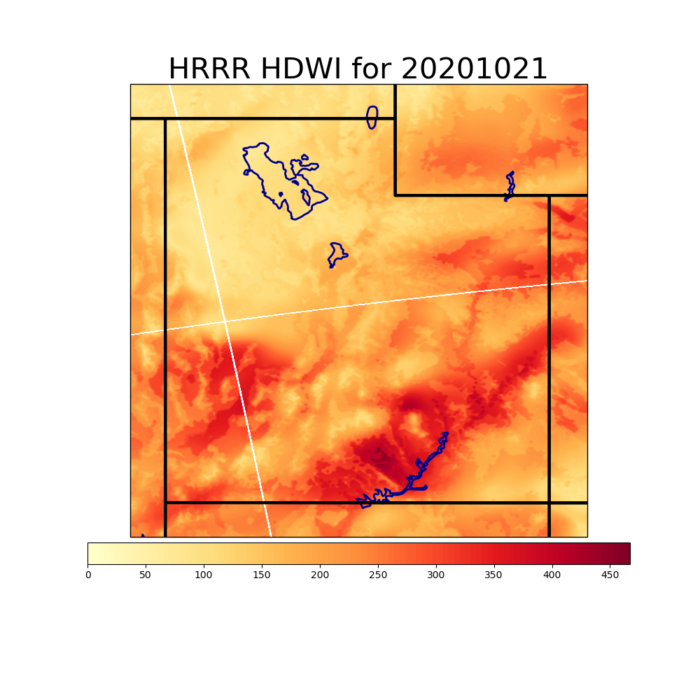

These summaries were derived from the High Resolution Rapid Refresh (HRRR) Model records archives managed by the University of Utah.
This graph shows the HDWI values for the state of Utah today. This data comes from the maximum value of the HDWI from about 6am - 6pm. The white lines seen are an unfortunate byproduct of the zarr file format used to store the HRRR data, since the data is stored in sections to make acess easier, there is a resulting space in between the sections and is of no real consequence. The HDWI value next to the line is the value at the line
